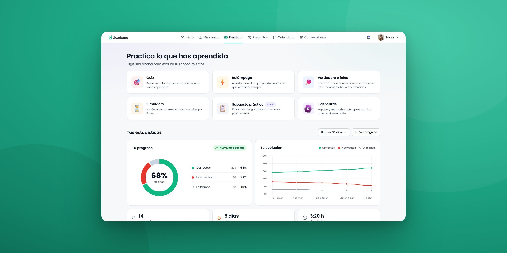
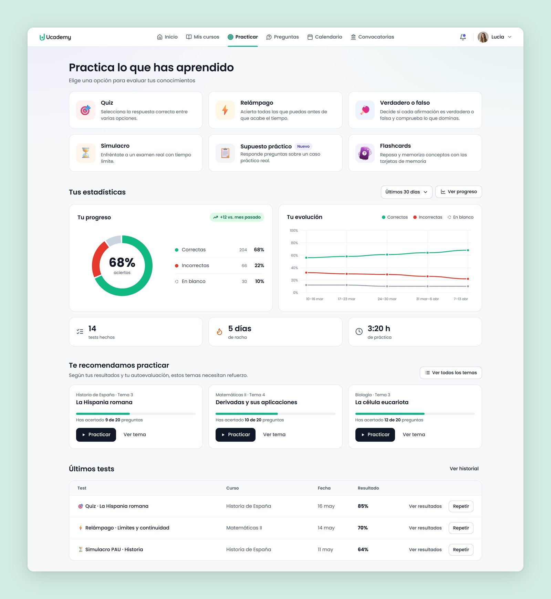
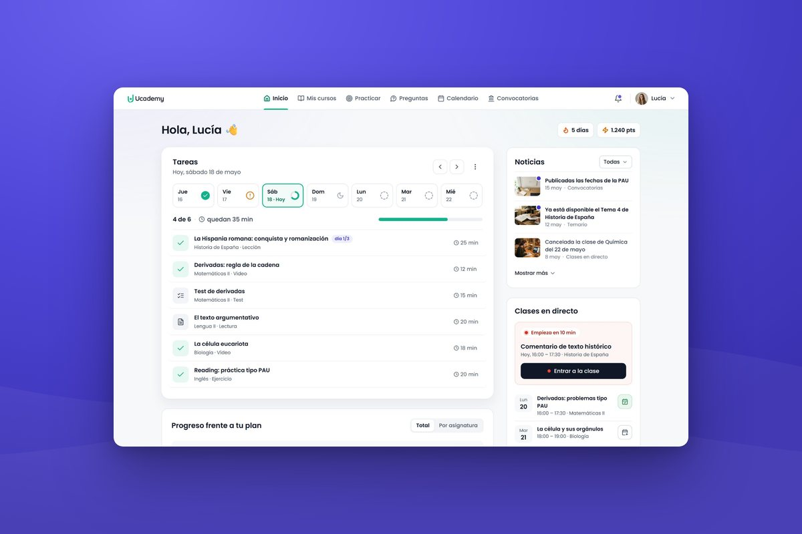
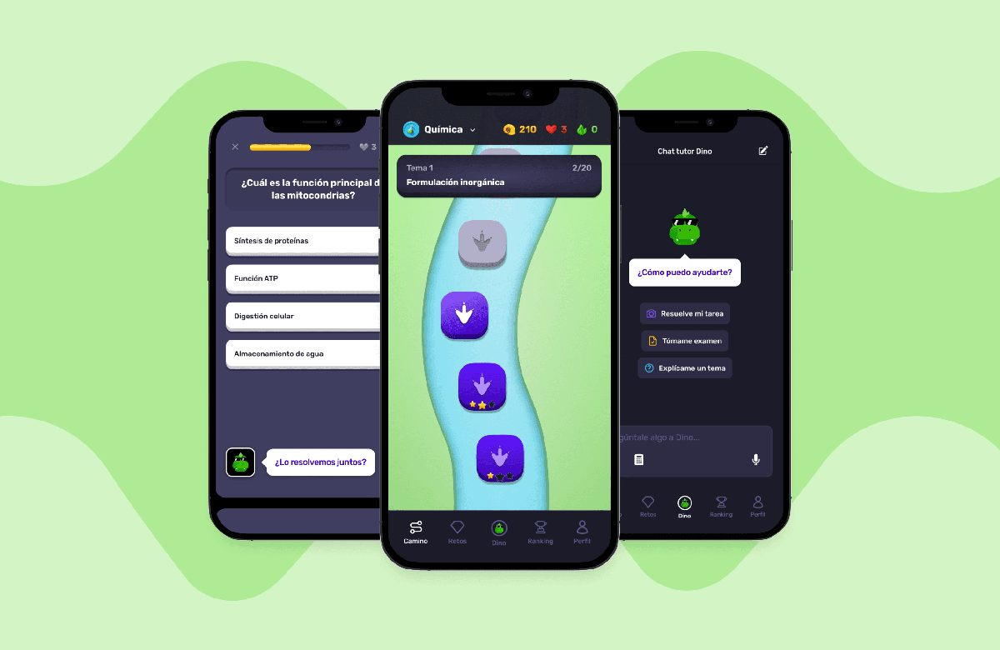
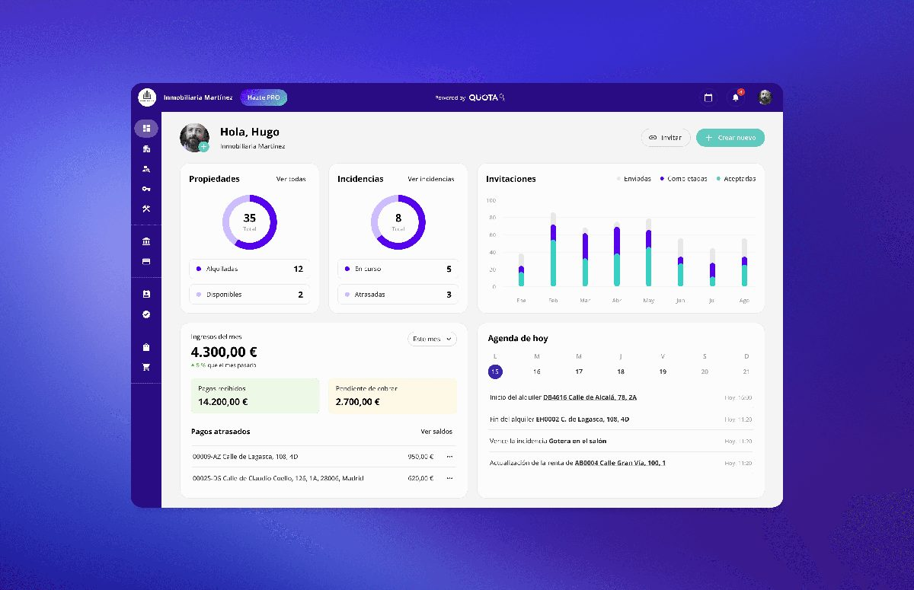

Practice, from hidden feature to sales argument
The challenge
Practice had little weight in the design of Ucademy: it was hidden and the experience wasn’t good, so few students used it. We wanted current students to practise more and know how they were doing on each topic, and to add practice modes for specific courses to reach a new audience.
What I did
I found why students didn’t practise in the usage metrics and error reports. Then I turned Practice into six ways to practise, with progress per topic and an explanation for every answer, and set the scope with the developer and the CTO.
The outcome
Practice became a sales argument: sales doubled in the quarter after the launch. 50%+ of students tried the new modes and came back, and they created 20% more tests.
Decisions

Impact
Sales used Practice as a key argument, and oposiciones students used the case-based exams a lot. Fewer students wrote to Customer Care or reported errors.
sales in the quarter after the launch
of students tried the new modes and came back
more tests created by students
ways to practise, up from three types of test
Learnings
Launch to sell, prioritise what students use
Flashcards were a sales argument and could bring new students in, so launching them was the right call for the business. But students used them little, so improving them was never a priority. When usage shows a feature isn’t used much, I put the effort into the features students do use.
Keep the signal when you remove a dead end
Locking topics without tests ended the false errors, but we lost track of which topics students wanted. Next time I’d let students ask for tests on a topic.
More work
All projects ↗
Student dashboard
A redesigned start experience that guides students every day, from their first visit to exam day.
Dino
Gamified learning app
An MVP for a new line of business at Ucademy, launched to find product-market fit.
Quota
Property management platform
One platform for rental agencies to manage properties, tenants, contracts and accounting.